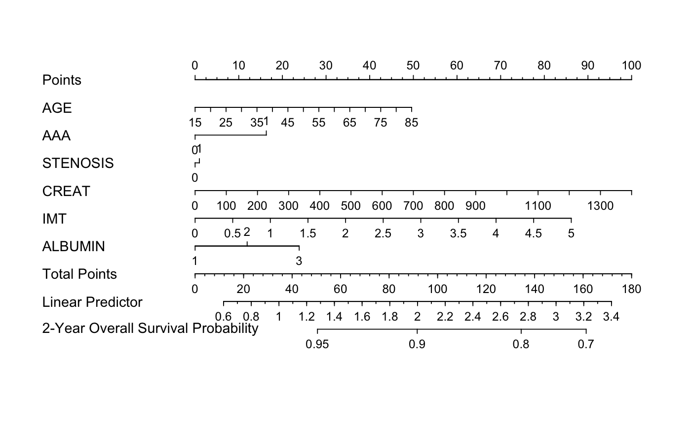

Automatic elastic-net model selection for high-dimensional Cox models, evaluated by penalized partial-likelihood.
hdcox.enet(x, y, nfolds = 5L, alphas = seq(0.05, 0.95, 0.05), rule = c("lambda.min", "lambda.1se"), seed = 1001, parallel = FALSE)
Surv.cv.glmnet."lambda.min" or
"lambda.1se". See cv.glmnet
for details.doParallel package and run registerDoParallel()
with the number of CPU cores before calling this function.library("survival") library("rms") # Load imputed SMART data data("smart") x = as.matrix(smart[, -c(1, 2)]) time = smart$TEVENT event = smart$EVENT y = Surv(time, event) # To enable parallel parameter tuning, first run: # library("doParallel") # registerDoParallel(detectCores()) # then set hdcox.enet(..., parallel = TRUE). # Fit Cox model with elastic-net penalty fit = hdcox.enet(x, y, nfolds = 3, alphas = c(0.3, 0.7), rule = "lambda.1se", seed = 11) # Prepare data for hdnom.nomogram x.df = as.data.frame(x) dd = datadist(x.df) options(datadist = "dd") # Generate hdnom.nomogram objects and plot nomogram nom = hdnom.nomogram(fit$enet_model, model.type = "enet", x, time, event, x.df, pred.at = 365 * 2, funlabel = "2-Year Overall Survival Probability") plot(nom)